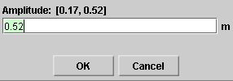

There are four basic control buttons. They are, from left to right:
-
 /
/ Play/Pause. Clicking
Play/Pause. Clicking  starts the
motion.
starts the
motion.
After Play has been clicked, the button will change into the Pause button
 .
.
Click it if you want to take a 'snapshot' of the motion at a given instant. To resume the motion, click Play once more.
-
 Step. Lets you step through the motion in equal
time steps.
Step. Lets you step through the motion in equal
time steps.
-
 Rewind. Resets the simulation to the starting point
with the previously chosen system parameters. After
clicking Rewind, click Play to restart the motion.
Rewind. Resets the simulation to the starting point
with the previously chosen system parameters. After
clicking Rewind, click Play to restart the motion.
-
 Reset. Resets the applet to its default setting.
Reset. Resets the applet to its default setting.
Adjustments in the system parameters can only be made after first clicking REWIND or RESET.


Selecting the Vectors toggle button displays the Vector panel illustrated above. By checking any of the three checkboxes on the panel, different vectors can be displayed. In the example above, the position vector and the velocity vector of the oscillating pendulum bob are checked, the latter so that it is shown with its tail end fixed at the origin, which is on the vertical through the pendulum bob's equilibrium position. These two vectors are shown in the image at the Top.
The following vectors can be displayed:
- position: position vector of the pendulum bob; color: cyan
- velocity at origin: horizontal component of velocity of the oscillating pendulum bob; the tail end of the vector is fixed on the vertical through the bob's equilibrium point; color: magenta
- velocity at pendulum bob: velocity vector of the oscillating pendulum bob, shown with its tail end attached to the bob; this is the actual velocity of the bob in the bob's circular trajectory, which is nearly but not quite the same as its horizontal component displayed when you select the velocity-at-orign vector; color: magenta

The Data toggle button displays/hides the Data box shown above. If you click on the Data box and drag, you can move the Data box anywhere on the screen or even off the screen.
The Data box lists the following data.
Top half. Constants of the motion and initial values.
- ω: angular frequency
- δ: phase angle; equal to θ(0) (see below)
- x(0): horizontal displacement of pendulum bob from equilibrium at t = 0
- vx(0): horizontal velocity component of pendulum bob at t = 0
- β(0): initial deflection angle of the pendulum string from the vertical; positive for deflection to the right, negative for deflection to the left
- PE(0): potential energy of the pendulum at t = 0
- KE(0): kinetic energy of the pendulum at t = 0
- E(0): mechanical energy of the pendulum
Note about δ = θ(0) and x(0). The phase angle δ and the initial displacement x(0) can be chosen before starting the motion by dragging the pendulum left or right. The initial velocity vx(0), initial potential energy PE(0), initial kinetic energy KE(0), and energy E are adjusted accordingly.
Bottom half. Values of time-dependent quantities at time t.
- t: time
- θ(t): phase angle of the pendulum bob at time t; the pendulum bob's displacement x(t) from equilibrium at time t is related to the phase angle and the amplitude A by x(t) = A cos θ(t) = A cos (ωt + δ)
- x(t): horizontal component of the pendulum bob's displacement from equilibrium at time t
- vx(t): horizontal component of the pendulum bob's velocity at time t
- β(t): deflection angle at time t of the pendulum string from the vertical; positive for deflection to the right, negative for deflection to the left
- PE(t): potential energy of the oscillating weight at time t
- KE(t): kinetic energy of the oscillating weight at time t

The Graphs toggle button displays/hides the graph panel which lets you select the graphs you want to have displayed. The graph panel is shown below.
The panel lets you select three states for each of the graphs of the following five variables: position, velocity, potential energy, kinetic energy, and mechanical energy:
-
Visibility
checkbox. When this is selected, the graph of the
respective variable is displayed.
With check marks as in the panel illustrated above, the position and velocity graphs are displayed.
-
 Move graph
checkbox. When this is selected, the graph of the
respective variable can be dragged anywhere in the
applet window.
Move graph
checkbox. When this is selected, the graph of the
respective variable can be dragged anywhere in the
applet window.
With check marks as in the panel illustrated above, the position graph can be moved.
-
 Reset graph
button. When this button is clicked, any graphs of
the respective variable will be erased, but the axes
will remain visible.
Reset graph
button. When this button is clicked, any graphs of
the respective variable will be erased, but the axes
will remain visible.
In each graph, the time t on the horizontal axis is in units of seconds (s). The time axis has divisions that are multiples of π, e.g., &pi/2. Don't let these divisions mislead you into thinking that the time axis is in units of rad. It is in units of seconds. E.g., the division π/2 s means 1.57 s.
The Zoom toggle button lets you display the vectors and graphs in standard size or reduced size. The size reduction affects position, velocity, potential energy, kinetic energy, and mechanical energy as follows.
- Position Vector: no reduction.
- Velocity Vector: reduction by a factor of 2.
- Potential Energy: reduction of the graph by a factor of 2 and of the potential energy portion of the energy bar by a factor of 4.
- Kinetic Energy: reduction of the graph by a factor of 2 and of the kinetic energy portion of the energy bar by a factor of 4.
- Mechanical Energy: reduction of the graph by a factor of 2 and of the overall height of the energy bar by a factor of 4.

There are four sliders in all. They are described below, in the order from left to right.
You can adjust a slider setting either by dragging the slider tab or by entering an exact value in the slider input dialog.
To enter an exact value, click on the Input Dialog button
 of the slider to open the dialog. The
dialog for the Amplitude slider is illustrated below. The
range in which values can be entered, from 0.17 m to 0.52 m
in this case, is indicated above the data entry field.
of the slider to open the dialog. The
dialog for the Amplitude slider is illustrated below. The
range in which values can be entered, from 0.17 m to 0.52 m
in this case, is indicated above the data entry field.

Clicking on a slider to the left or right of the slider tab allows fine adjustment of the slider setting.
-
Amplitude Slider. This slider lets you adjust the amplitude A of the pendulum bob's motion in the range from 0.17 m to 0.52 m, in steps of 0.52 m.
The radius of the reference circle is equal to the amplitude.
-
Mass Slider. This slider lets you adjust the mass m of the pendulum bob between 0.50 kg and 1.00 kg, in steps of 0.01 kg. (The pendulum string is assumed to be massless.)
-
Length Slider. This slider lets you adjust the length L of the pendulum in the range from 1.00 m to 2.00 m, in steps of 0.01 m.
-
g Slider. This slider lets you adjust the magnitude g of the acceleration due to gravity between 0 and 20.0 m/s2, in steps of 0.1 m/s2.
A vertical column in the lower right-hand corner of the applet window displays the potential energy PE of the oscillating pendulum bob in blue and the kinetic energy KE in red.
The potential energy is taken to be zero when the bob is at its equilibrium position. The zero energy level is at the bottom of the applet window.